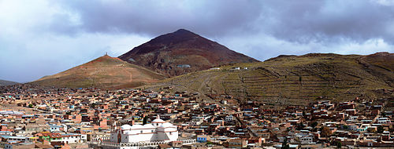
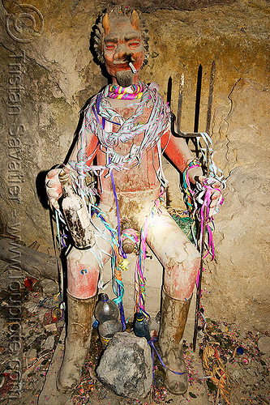

Avevo visto alcuni anni fa, in occasione di un cine-festival della montagna, un bellissimo film documentario sulla miniera di Potosì, in Bolivia.
Un film che mi è rimasto cementato nella memoria per le incredibili condizioni ambientali e di lavoro di quei minatori, la cui speranza di vita è ridicola (ma direi che l'aggettivo "ridicola" è già ottimistico...).
A distanza di tempo, ne trovo ora conferma leggendo l'avvincente libro di Marco Deambrogio "Il giro del mondo in moto", che consiglio caldamente agli amanti dei viaggi avventura, reali o virtuali.
Deambrogio, come se non bastassero le sue spericolate imprese in terra sudamericana, ha voluto pure scendere nei cunicoli di questo antro infernale.
Ma, giustamente, passando prima dal mercato per qualche dono ai minatori...
-... alcuni candelotti di dinamite, un sacchetto di foglie di coca e qualche bottiglia di alcol...-
ovvero il massimo che un minatore di Potosì possa desiderare.
Sulla coperta un bell'assortimento di Dinabol (che NON è uno steroide...) e micce già tagliate a misura; in mano un fornito sacchetto di detonatori.
Siamo al mercato di Tarabuco, Bolivia.
La descrizione che Marco fa della sua visita là sotto coincide perfettamente con le impressionanti immagini che io ricordo, prese dal vero da un bravissimo documentarista.
Potosì è una grande città sulle Ande boliviane a 3800 metri (la seconda città al mondo più elevata con più di 100mila abitanti) ed è Patrimonio dell'Umanità dal 1987 per la sue testimonianze storiche riguardo la sua celeberrima miniera del Cerro Rico, proverbiale simbolo di ricchezza (per gli altri) e che si vede sullo sfondo nella foto.
E' da circa 500 anni che questa città fornisce minerali d'argento e stagno, ed è da altrettanto tempo che la popolazione del luogo è sfruttata in maniera disumana, dai tempi del Vicerè Francisco de Toledo alle odierne multinazionali.
(Ma così va il mondo e non voglio qui approfondire).

L'esaurimento (per morte...) dei lavoratori indigeni cominciò già alla fine del '500, talchè il re di Spagna concesse il permesso di importare un paio di migliaia di schiavi africani all'anno.
Ricevuto il permesso, decine di migliaia di schiavi durante il periodo coloniale furono importati per lavorare nelle miniere della città e utilizzati anche come muli umani, dal momento che era più conveniente sostituire uno schiavo ad un asino.
La produzione di argento raggiunse l'apice intorno al 1650, quando le vene cominciarono a esaurirsi, e Potosi entrò lentamente in una fase di declino.
Agli inizi dell'800 la popolazione era scesa a soli 8000 abitanti, contro i 160mila di due secoli prima.
A salvare Potosí da diventare una città fantasma è stata la produzione di stagno, un metallo a cui gli spagnoli non avevano mai dato importanza; ma tutt'ora orde di disperati passano la loro breve vita nelle viscere del Cerro (4800 m!) per grattare con le mani, o quando va bene con qualche candelotto di dinamite, le magre vene argentifere rimaste, in compagnia di esalazioni arsenicali e dell'immancabile "Tio", un demonio sotterraneo la cui effige veneratissima non manca mai in nessuna galleria di questo luogo sepolto e fuori dal mondo.

Un Tio in una galleria, con tutti gli accessori